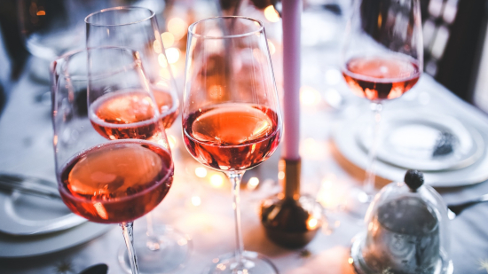

Vinho Rosé
A história do vinho rosé é longa e acredita-se que o primeiro elaborado seria rosáceo, na Antiga Grécia. A fermentação ocorria em cerâmicas a partir de um blend de uvas brancas e tintas que seriam esmagadas com os pés. Sem tecnologia e sem conhecimento, os vinhos oxidavam com muita facilidade. O sucesso do rosé veio com a descontração durante o verão em regiões praianas francesas (séc. XIX), sendo rapidamente associado à sofisticação e à diversão. O alto consumo fez com que crescesse exorbitantemente a produção desses vinhos que eram comercializados logo após a vinificação.
O vinho rosé é aquele de cor rosada, cuja intensidade varia de acordo com as uvas e os métodos de produção utilizados. A tonalidade pode ir de um rosa quase translúcido até um vermelho pálido. Esse estilo de vinho, delicado e versátil, vem conquistando muitos paladares no mundo todo.

Curiosidades:
-
Por causa de sua cor rosa translúcida, muitas pessoas acreditam que é uma mistura de vinhos claros e escuros. Porém, sua cor é o resultado do contato do suco —obtido pela prensagem de uvas tintas— com as cascas (onde está o pigmento) por um período de tempo muito curto que não costuma ultrapassar 24 ou 48 horas.
- O rosé é um vinho milenar que teve sua história iniciada há séculos. Os gregos criaram os vinhos rosados (tintos claros) originais, mas essas primeiras tentativas foram secas e tânicas devido ao contato prolongado entre a uva e a pele durante a fermentação.
- Como o rosé combina características das uvas vermelhas com traços de personalidade da uva branca (taninos baixos, acidez brilhante, sabores crocantes), ele combina perfeitamente com uma grande variedade de refeições.
- A maceração é o estilo mais popular de produção de rosé e exige que os vinicultores descansem (macerem) suas uvas de vinho tinto em um recipiente com seus sucos antes de usá-las para produzir rosé. Este estilo produz uma versão mais escura do vinho rosé com sabores proeminentes e personalidades ousadas que podem combinar bem com refeições mais saborosas.